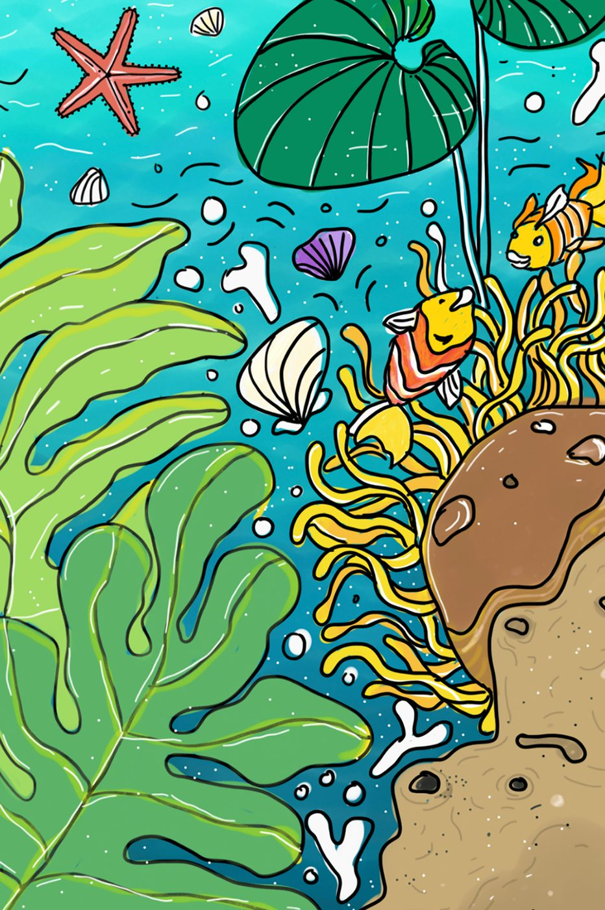

Paintings, digital prints and hand-shaped clay, made beyond the 9-to-5 — imperfect on purpose, honest by design.
"The most honest thing a person can be is unfinished."— from the artist's notebook
Every piece is tagged as it stands today — originals marked sold stay here as part of the record.
Magnets, mini vases, charms and pairs — made on a desk that has seen too many creative crises.

"imperfect soul began as a realisation to stop being someone else."
I'm Varsha Anand — artist, dreamer, and a collector of quiet moments. I work across paintings, digital prints, and clay miniatures, each medium being a different language for the same conversation.
The fish symbol is a reminder of that, from my signature artwork "Breathe" — something I created in memory of time spent on an Andaman holiday. It grew into a brand because people kept asking if they could take pieces of it home. Now they can.
I work from Bangalore, beyond my 9-to-5, usually at odd hours, always with good music. My artworks are not standard, modular or perfect — they're made with lots of passion, joy and honesty. My clay collections are made by hand, every magnet and mini vase shaped on a desk that has seen too many creative crises.
Short, honest entries on process, clay, and what the fish means.